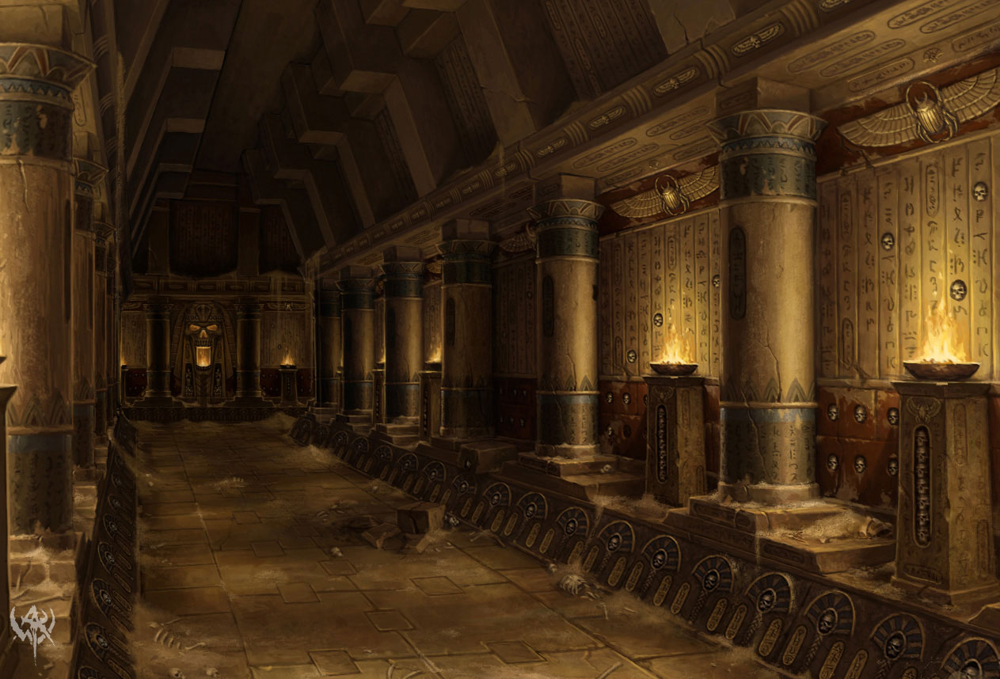
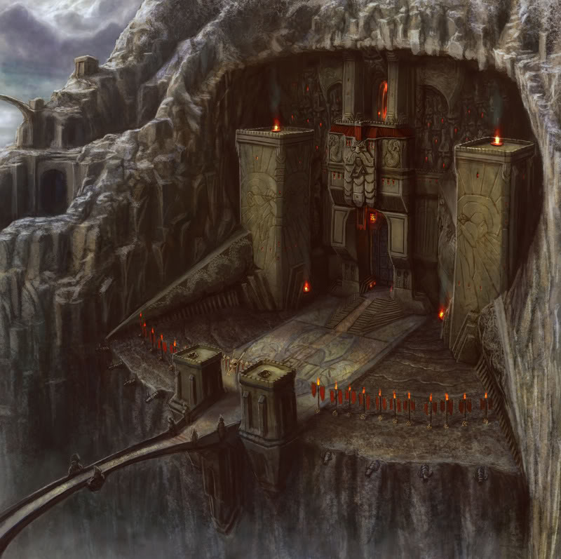
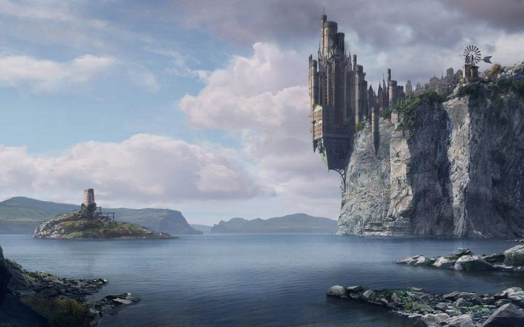
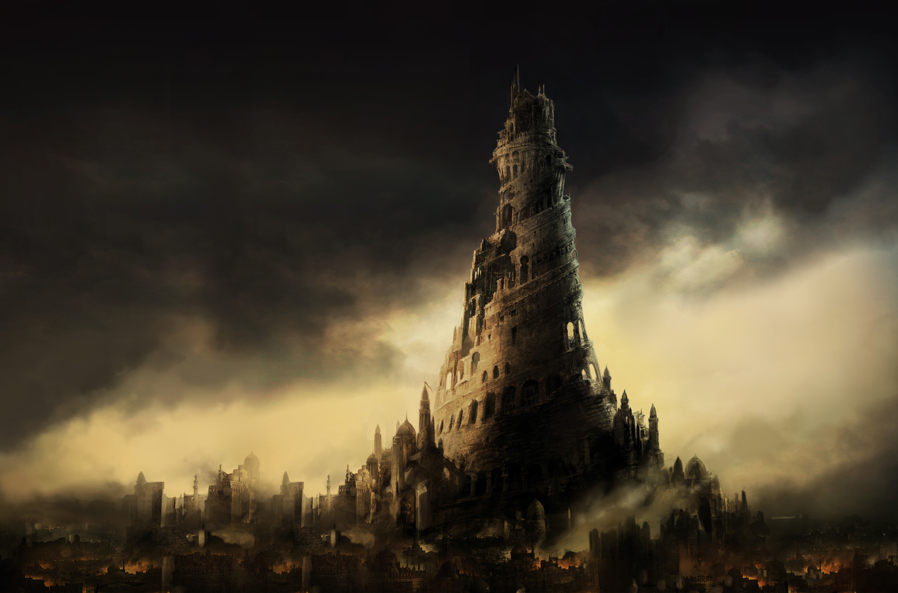

Government
Monarchy - The Kingdom of Haiwan is ruled by the monarch of the Chijo line. They reign from the halls of Shimarisu, guiding the moles against the foe who has the most marks in the Dammaz Kron, a large underground hall of stone tablets that reco rd the slights that have been made against the moles.
Terrain
Haiwan is a large coastal region controled by moles. The moles do not live above ground though, instead living under it connecting all their cities by tunnels. The city centers are the only areas that protrude above the ground to allow for trade with other countries. The main above ground roads still exist but are not well keep and as such various wildlife and bandits occupy it commonly.
On the Coasts of Haiwan a jagged rocks make trade seagoing trade hard.
Common Wildlife
Moles - Sturdy, strong and stubborn once they set their minds on a task they work until it has been completed. With their great fortitude they live lives 10 times that of mice. The have been known to hold grudges over small slights for generations.
Two Meese
Owls
Hawks
Snakes
Cats
Coyote
Lizards
Centipedes
Areas of Note
Shimarisu - The Capital of Haiwan. The King of the moles of the Chijo line lives his mighty above ground fortress here. The fort rivals that of Izu in size and strength. Underneath Shimarisu is a vast network of tunnels that lead to all the other mole cities. Shimarisu is built next to Zhufbar Lake which supplys water from Karak Norm via the Karak River. Many a mole have sought to seek their fortunes in following the river to its source as legend fortells that motherloads of valueable stones and ores steem forth from the water. Few of these moles return, but those that do are richer beyond belief.
The line of Chijo has the Dammaz Kron, a large underground hall of stone tablets. In it contains the wrongdoings and treacherous deeds ever perpetrated against the mole people and Chijo line. The Dammaz Kron is housed in the Imperial Temple next to the throne of Chijo.

Oka - The Frontline of the Empire. Oka is a mighty fortress built into the side of a large stone cliff at the edge of Karak Norn. It is a primarily military city that trains the various armies of the Moles. Trade consists of ores, metals, weapons and armors.
Karak Norn is the natural first defensive line of the moles. There is only one well managed path through the mountains which has many an outpost on it to moniter trades and peoples that flow in and out of Haiwan. Outside of this path, the wild springs up and visious creatures such as foxes, coyote, cats and snakes stalk the land while hawks and owls scout from above.

Moru - The Fjord of the Empire. Moru is a coastal city built into Barak Varr Fjord that overlook the Haiyang Bay. The great vaults of Moru houses the gold, platium, and gems of the Haiwan Empire. Although access to these vaults is restricted to banking personal and the royal family, some say that the vaults hold items of incredible power that are beyond comprehension of the common folk.

Todai - The Eyes of the Empire. Todai is the only mole city that is built almost interiorly out of the ground. The city extends upwards towards the sky 1000s of moles high. At the top rests the Eye of Chijo, a large device that allows the holy monks of Todai to observe events many many miles away. Trade consists of various animals and food that have been raised in the nearby land.

Engan - The Port of the Empire. Engan is the only trading port that non-moles are allowed access to. It carries the goods produced by the Haiwan Empire to other countries. Most moles tend to not be seafair and thus pay other races to run their trading vessals. Trade consists of Fish, and various goods brought in by merchants.
 Other Regions
Home
Other Regions
Home